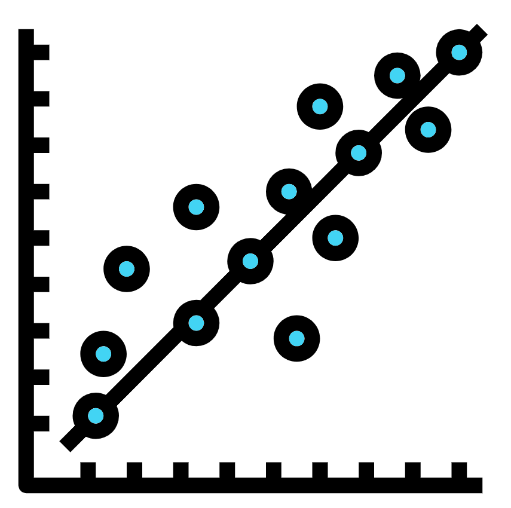
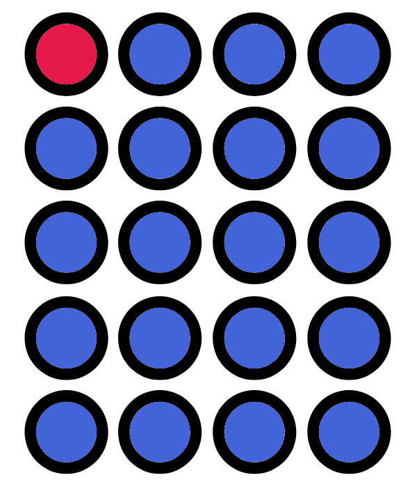

17 Basic stats
This week we’ll learn how to carry out some basic stats. This will involve linear regressions and some t-tests.
Create and use the directory “Chapter_17-18” as the working directory for this chapter. Additionally create a new script called “Stats.R” for this chapter.
Before we continue just a reminder about annotations and code sections.
17.1 Linear regression

Linear regression is a method to model the relationship between two numeric vectors. Ultimately we want to produce the predictive equation:
\[ y = mx + c \]
Where m is equal to the gradient and c is equal to the intercept. With this we can predict the value of y if we know the value of x and vice versa.
17.1.1 Fish market dataset

Before getting to the analysis we need to read in the data. For this chapter we will be looking at the file Fish.csv which contains information of 7 common fish species sold in Fish markets (Source: https://www.kaggle.com/aungpyaeap/fish-market).
Download the file into your “Chapter_17-18” directory.
The columns for the data are:
- Species: Species of fish (“Bream”, “Roach”, “Whitefish”, “Parkki”, “Perch”, “Pike”, and “Smelt”).
- Weight: Weight of the fish in grams.
- Length1: Vertical length of the fish in centimetres.
- Length2: Diagonal length of the fish in centimetres.
- Length3: Cross length of the fish in centimetres.
- Height: Height of the fish in centimetres.
- Width: Diagonal width of the fish in centimetres.
The dataset is primarily interested in predicting the weight of a fish based on its length, height, or width.
First step is to read in the data:
fish_df <- read.csv("Fish.csv", check.names = FALSE)Have a look at the data frame and you’ll see it looks pretty good with no NA values.
For now we only want to look at the information for the species Bream. Let’s create a “bream_df”:
#Create the data frame
bream_df <- fish_df[fish_df$Species == "Bream",]
#Check how many rows it has
nrow(bream_df)We are left with 35 data points which should be plenty for our linear regression.
17.1.2 Scatterplot

Before we carry out the linear regression we’ll create a scatterplot of the two vectors we want to compare. For the first instance we will compare Height to Length1 (vertical length).
In fact before we do, let’s change the column name “Length1” to “v_length” so it is a bit more intuitive for us. Whilst we are at it we’ll change the other length column names.
colnames(bream_df)[3:5] <- c("v_length", "d_length", "c_length")Time to quickly plot “v_length” (x) against “Weight” (y):
plot(x = bream_df$v_length, y = bream_df$Weight)Super! That looks like a decently linear plot with a positive trend. We will therefore fit the linear model.
17.1.3 Linear model
We can fit a linear model with the function lm(). We simply provide the column names as a formula ( y_column_name ~ x_column_name ) similar to the boxplot() function.
fit <- lm(Weight~v_length, data=bream_df)We can now add the linear model as a line to our plot with the function abline()
abline(fit)With the line added we also want to add the linear equation to the plot. To do this we need to check the contents of the “fit” variable first so we know what to add.
fitYou’ll see the following two sections:
Call:Shows the function with options you ran to create “fit”Coefficients:: This contains 2 parts(Intercept): This is the intercept value of the linear model (c)v_length: This is the gradient values (m)
Our next step is to create a string scalar containing the linear equation. To do this we can extract the coefficients from the “fit” object like below:
m <- fit$coefficients[2]
c <- fit$coefficients[1]If you print out “m” and “c” to the console you’ll notice they have a different number of decimal places than when displayed through printing “fit”. We will therefore change these to 2 decimal places with the round() function:
m <- round(m, digits = 2)
c <- round(c, digits = 2)Now to use the paste0() function to create our linear equation as a string scalar:
linear_equation <- paste0("y = ", m , "x + ", c)Finally we will recreate our plot, add the abline, and then add the linear equation. We will add the linear equation with the function text():
plot(x = bream_df$v_length, y = bream_df$Weight)
abline(fit)
text(x = 30, y = 800, labels = linear_equation)The text() options x = and y = normally require a bit of trial and error to set it in a nice location. This can be a bit fiddly but is made much easier by making the label smaller (e.g. making the numbers have a smaller amount of decimal places).
17.2 t-test

A t-test can be used to determine if there is a significant difference between the means of two groups.
In this example we will compare the weights of the fish Bream, Parkki, and Roach. Therefore let’s subset our data frame so we have three data frames, one for each species.
We already have a “bream_df” so we only need to make one for Parkki and one for Roach. Before we do we’ll change the column names for “fish_df” like we did for “bream_df”
colnames(fish_df)[3:5] <- c("v_length", "d_length", "c_length")
parkki_df <- fish_df[fish_df$Species == "Parkki",]
roach_df <- fish_df[fish_df$Species == "Roach",]17.2.1 Boxplot

Before carrying out a t-test it can be useful to visualise the difference between groups with a boxplot.
Before we do this we need to combine the three data frames into one. This can be done by binding the rows with rbind(). This will combine two provided data frames which contain the same number of columns with the same column names.
#Combine bream_df and parkki_df
fish_subset_df <- rbind(bream_df, parkki_df)
#Now rbind roach_df to our new df
fish_subset_df <- rbind(fish_subset_df, roach_df)There is also cbind to combine data frames by columns. In this case the data frames need to have the same number of rows with the same order and names.
Time for a boxplot!
boxplot(Weight~Species, data = fish_subset_df)We can clearly see that the weights of Parkki and Roach are very similar to each other but very different to Bream’s weight.
17.2.2 t-test comparison

Let us see if what we see visually is also visible statistically.
We can carry out a t-test with the function t.test(). Simply provide the function with the two numerical vectors you would like to compare.
bream_parkki_ttest <- t.test(bream_df$Weight, parkki_df$Weight)
bream_roach_ttest <- t.test(bream_df$Weight, roach_df$Weight)
parkki_roach_ttest <- t.test(parkki_df$Weight, roach_df$Weight)Print the resulting variables to the console and you will see a lot of information. I am sure all these values can say a lot about the data but we are only interested in the p-values.
In this case we can say the means between the two groups tested are significantly different if the p-value is less than 0.05 (1 in 20).
It can be a bit annoying to have to look through the t.test() output for each result so we’ll create a vector to contain the p-values for comparisons against Bream.
fish_species_weight_ttests <- c(
bream_parkki_ttest$p.value,
bream_roach_ttest$p.value
)This is pretty useful but we can’t immediately see which comparison each t-test is equal to. Thankfully just like data frames have row and column names, vectors can have names for each element.
#Add the vector names
names(fish_species_weight_ttests) <-
c("bream_vs_parkki","bream_vs_roach")
#Look at the vector with the added names
fish_species_weight_ttestsWe can then index the vector through the names.
#Access the p-value of Bream against Roach
fish_species_weight_ttests["bream_vs_roach"]
#Add the p-value of Parkki against Roach
fish_species_weight_ttests["parkki_vs_roach"] <-
parkki_roach_ttest$p.valueWith our nice vector of p-values we can quickly see where the p-value is less than 0.05 (i.e. the means are significantly different) and where it is higher (i.e. the means aren’t significantly different).
fish_species_weight_ttests < 0.05Do these p-values match what you saw in the boxplot?
17.3 Some more useful functions

17.3.1 Summary
The function summary() can give you some quick summary information for each column of a data frame.
summary(fish_df)This gives you some nice information for your numerical columns:
Min.: The minimum number1st Qu.: The 25th quartileMedian: The median (Middle sorted number)Mean: The average3rd Qu.: The 75th quartileMax.: The maximum number
You will notice the information given for the “Species” column is not very informative as it is a character column. However, this would be a lot more descriptive if it was a factor.
Therefore we’ll change the “Species” column to a factor and run summary() again.
fish_df$Species <- as.factor(fish_df$Species)
summary(fish_df)Now summary() shows how many instances of each species is present in the data frame.
For future cases it may better to use stringsAsFactors = TRUE with the read.csv() function when we first read in the file.
17.3.2 Table
The table() function will provide a vector containing the number of instances for each level in a factor. This is pretty much what summary() did to a factor.
However, unlike summary() it will also do this for characters and numerics.
Note: Remember to use the “Help” pane if you are not sure what a function does.
#Table command for columns from fish_df
table(fish_df$Species)
table(as.character(fish_df$Species))
table(fish_df$Height)
table(floor(fish_df$Height))
table(as.integer(fish_df$Height))
#Run table on various numeric vectors
table(1:10)
table(1:100 * 0)
table(1:100 %% 2)
table(seq(from = 0, to = 50, by = 0.5) %% 7.5)
table(c(1:9,1:8,1:7,1:6,1:5,1:4,1:3,1:2,1))
#Table will run on logicals too
table(1:100 > 50)
table(c("a","a","b","c") == "a")
#Create a vector of 20 random numbers between 0 and 10
random_num_vec <- sample(0:10, size = 20, replace = TRUE )
#table
table(random_num_vec)
#Create a character vector randomly containing 1-10 of the strings
#"Book", "TV", and "Film" each
random_char_vec <- c(
rep("Book", sample(1:10, size = 1)),
rep("TV", sample(1:10, size = 1)),
rep("Film", sample(1:10, size = 1))
)
#Now for table()
table(random_char_vec)
#Can create a quick bar plot with the output from table()
barplot(table(random_char_vec))A few more functions were introduced above. I will let you explore them yourself or you can ask me verbally.
17.4 Further resources

Below are some further resources you can check that will help if you want to do some other plots and figures.
Quick-R: https://www.statmethods.net/index.html
R Cookbook: https://rc2e.com/